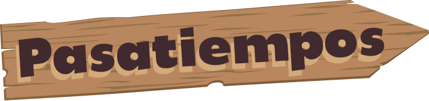

En esta seccion hablare de mis pasatiempos
Mis pasatiempos desde pequeña han sido pescar con mis padres y salir a caminar por el parque con mi abuelo, ese en realidad no es tanto un super pasatiempo ya que me encanta la compañia de mi abuelo pero no me agrada tanto el hecho de salir a la calle y mucho menos caminar por el parque Salir a correr o a caminar. Les muestro una lista de mis pasatiempos favoritos. Paso mucho tiempo en casa sola, por esto tengo demasiado tiempo de hacer muchos de estos pasatiempos.
Bailar
Leer libros.
Senderismo.
Escribir en un blog.
Cocinar.
Resolver acertijos.
Resolver acertijos.
Astronomía.
Aprendizaje online.
Tocar un instrumento.
Papiroflexia.
Pasear a las mascotas.
Jardinería.
Coser.
Desde pequeño mi pasión ha sido la música, por eso, estudio todo lo relacionado a ella. Primero, aprendí a tocar piano, luego, me enseñaron guitarra, seguido de canto. Ahora veo clases de teoría y solfeo.